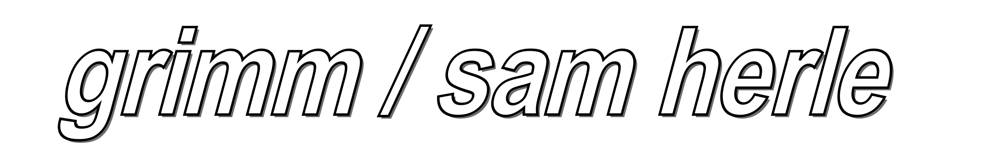
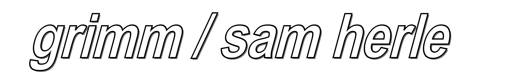

a glistening bridge appears before you....

Grimm began in 2020 as the moniker and experimental pop music project of Vancouver-based artist Sam Herle (formerly of the band Elf Pity), and is now a five piece band including Naia Mann, Cody Schroeter, Chris Bede, and Len Plisic. The project intertwines fantastical, genre-fiction inspired themes with everyday realism, and draws on an eclectic range of influences including electropop, early video game music, and indie rock. Grimm’s debut album ‘Electro Folklore’ was released in September 2021 on Kingfisher Bluez, and since then they have released two singles, ‘Last Halloween’, and ‘What Are You Gonna Do, Cry?’.
Sam Herle is also a new media artist whose recent work involves developing 3D art exhibitions for various organizations and groups, both online and in interactive physical installations. These works lean heavily into a nostalgia for maximalist, early internet aesthetics, and strive to create feelings of warmth, comfort and whimsy in digital landscapes that so often come across as cold and sterile. She is the co-creator of the virtual exhibition space 'Cyber Warehouse' (featured on the cover of the November/December 2020 edition of Discorder Magazine and in Exclaim! Magazine). Similar projects she has worked on include the online 3D exhibition space ‘Queer Digital Intimacies’, and the online sound installation ‘Orbs Orbs Orbs’. These and other similar projects are elaborated on *here*. She received her BFA in Illustration from Emily Carr University in 2020, and began to teach herself to code and create digital art galleries later that same year.